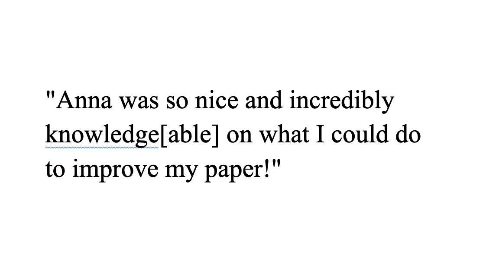

Writing Tutoring
As a writing tutor, for the last 2.5 years, I've helped 500+ students with hundreds of writing tasks both in-person and asynchronously, from first college papers to PhD dissertations to application materials.
I take a confidence-first approach to tutoring. At MU's Writing Center, we make better writers, not better writing; to me, that means helping students break big assignments and broad feedback down into manageable steps that make them feel confident they can complete the work.
In addition to my regular tutoring responsibilities, I also served as a mentor to three new tutors during the Spring 2024, Spring 2025 and Fall 2025 semesters. I always encourage new tutors to give every student they interact with grace. Writing isn't everyone's comfort zone, and that's okay!
As tutors, we also occasionally get feedback from the students we work with. Here's what some of my tutees have had to say about me:
